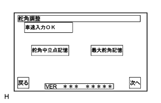

バックガイドモニターシステム ダイアグノーシスシステム |
左右両側にいっぱいまでステアリングホイールを切り、かつ実舵角が最大舵角記憶値を15.0°以上オーバーした場合、舵角中立点を補正する。
バッテリ端子の脱着、ステアリングセンサのコネクタ脱着等により画面に“システム初期化中”の表示がされた場合、以下のいずれかの操作を行い舵角中立点のずれを修正する。
方法1:左右両側にステアリングホイールをいっぱいに切ると舵角中立点が修正される。
方法2:できるだけ曲がり角、カーブ、渋滞の少ない状況で、車速20km/h以上および5分間以上走行する。その後車両を停止させ、中立点が学習されたかを確認する。学習されていない場合は、再び走行する。(直進状態を判断して中立点が学習される)
舵角中立点のずれ以外の原因による表示のずれ
ステアリングホイールの取り付け角度にずれがあると、ステアリングホイールをまっすぐにした時、車幅延長線と予想進路がずれる。
カメラ光軸調整が正しくできていない時は、車幅延長線と予想進路がずれる。
ダイアグノーシスコード点検(要領は 参照)
参照)
サービス検査(要領は参照)
 |
調整前準備
ステアリングホイールをまっすぐにして車両停止。
調整用ターゲットバーを 図の位置に設置する。(カメラ光軸調整をする場合のみ)
 |
ダイアグ起動
エンジンを始動する。
ダイアグノーシスを起動させる。(要領は参照)
ダイアグ検査メニュー画面の“カメラ検査”を選択する。
|  |
舵角調整
ステアリングホイールが車両が直進する位置(ほぼまっすぐ±5度以下を目安)になっていることを確認し、“舵角中立点記憶”を押す。
舵角中立点記憶後、ステアリングを左へ止まるまで回し、“最大舵角記憶”を押す。同様に右へも止まるまで回し、“最大舵角記憶”を押す。押された時点で左右最大舵角記憶がされる。
 |
カメラ光軸調整
回転スイッチA、Bを押してCを回転させ、調整用ターゲットバーと平行になるようにする。
上下左右スイッチを押してCを上下左右に移動させ、調整用ターゲットバーがDの中心に入るようにする。
“次へ”を選択する
 |
A(バンパー端から[1210mm]先を示す)と調整用ターゲットバーがほぼ重なっていることを確認する。また、ステアリングが直進状態の時、予想進路がまっすぐ(車幅延長線と重なっている)であることを確認する。
完了を選択し、ダイアグ検査メニューに戻り調整終了。
調整確認
最大舵角記憶を行った時、ダイアグ検査終了後に左右いっぱいにステアリングを切るまで、予想進路が連動することを画面で確認する。